WAVEPro™ Technology
The next-gen solution to high traffic lakes & extreme weather conditions
The next-gen solution to high traffic lakes & extreme weather conditions
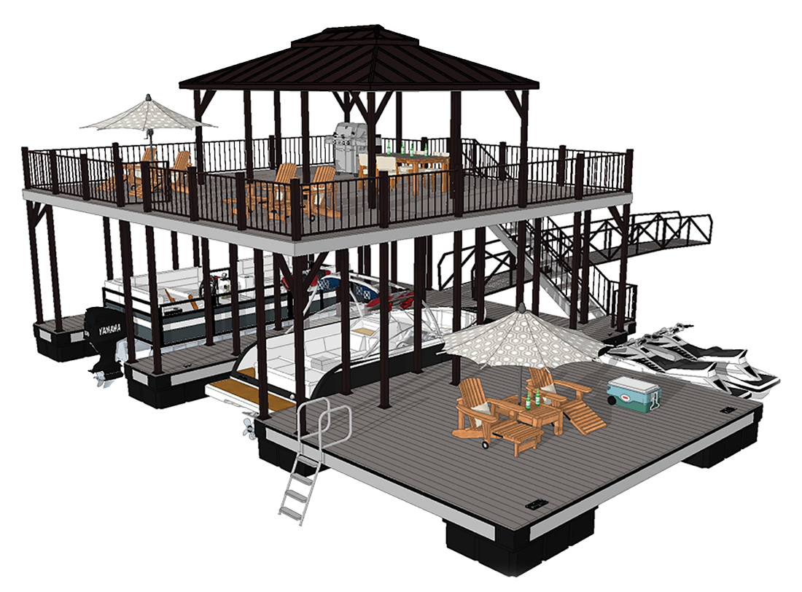
Looking good is great, and standing strong is even better. Busier waterways and the forces of nature require a dock built to not only survive, but to thrive when conditions get rough. That’s why we developed WAVEPro technology.
Every Flotation Systems' dock features innovative, stabilizing WAVEPro technology. "Wave Attentive Versatility Engineered" was developed to skillfully master the waves and stand strong against the forces of nature. Through state-of-the-art engineering and meticulous construction practices, our docks are built to endure year after year, in demanding weather and water conditions.
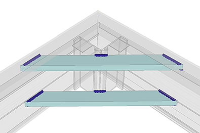
Standard in every Flotation Systems dock is a distinctive combination of 10” heavy gauge E- channel and reinforced corner sleeves with double gussets. The 10” E-channel is integrated throughout the entire substructure.
Particular points of tension and stress receive mainframe corner sleeves and double diagonal gusset reinforcement.
Our engineers have worked to ensure that your dock is strong at every point —where other docks are not.
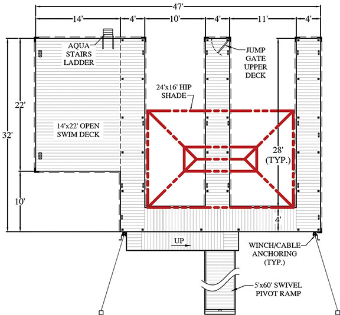
We design our own custom moldings, extrusions and finishing products for key dock components, which are incorporated throughout the dock system to better facilitate each dock to its environment.
Experienced in-house design team engineers use 3-D CAD software for a more exacting fit and consistent components. This rigorous engineering is why every dock installed by an authorized Flotation System dealer carries our industry-leading limited lifetime warranty.
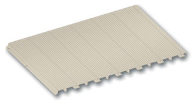
Powder coat finishes for decking, roofing and railings provide a highly resistant protection to all forms of wear, including scratching, fading, chipping and corrosion. Upper decks feature gapless, waterproof LockDry® aluminum marine decking – one of the highest consumer-rated marine decking. LockDry marine decking has a SuperDurableTM powder coat finish which is applied according to specification AAMA 2604 (higher than the typical AAMA 2603 spec in the market). SuperDurable has three to four times the thickness of wet, baked-on paints and a high impact resistance. It will not peel off like enamel finishes, is extremely durable to the elements and resistant to most chemicals and solvents.All aluminum powder coated railings are laboratory tested and building code approved. Other railing design options available upon request.
We use true 4” roof support posts with radius corners incorporated within the 10” E-channel lower mainframe. This creates an unmatched, welded double gusset assembly to better withstand extreme marine conditions and enables us to produce one of the best engineered roof systems in the dock industry. Roof post bushing reduces noise by eliminating metal-to-metal friction.
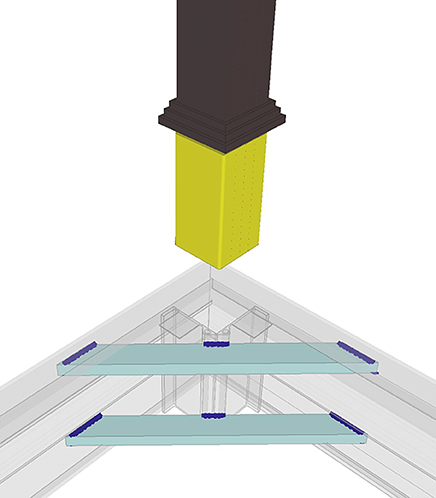
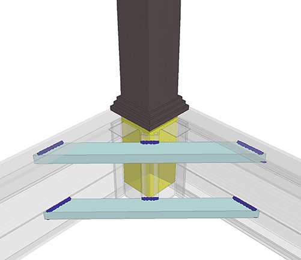
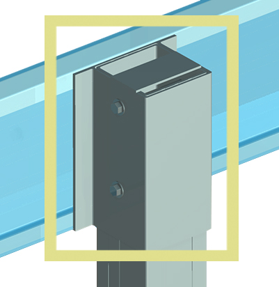
“Box” channel post and truss roof assembly creates a strong, reliable connection designed for the “long haul” life of your dock.Each FSI corner roof post is anchored to the mainframe by using 5” high-quality stainless steel hex bolts and nylon lock nuts to give maximum anchorage and a secure connection.
All other interior roof supports are secured with double 3/8” x 5” stainless steel bolts at both top and bottom of posts.
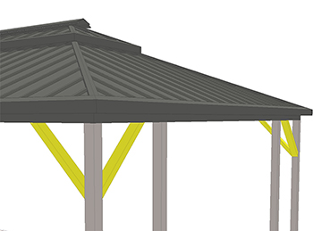
Quality diagonal bracing is essential for dock rigidity. It’s the solid core required to maintain a dock’s structural integrity. We brace every dock with sturdy, radius-cornered 4”x4”.
To allow for a more “user-friendly” dock, diagonal reinforcement bracing is located overhead at high stress areas, corners and connection points. Bracing in these areas assists in maintaining rigidity and stability in rough water or windy conditions. There is NO substitute for diagonal bracing!
Other manufacturers call this overbuilt. We won’t build a dock without it.
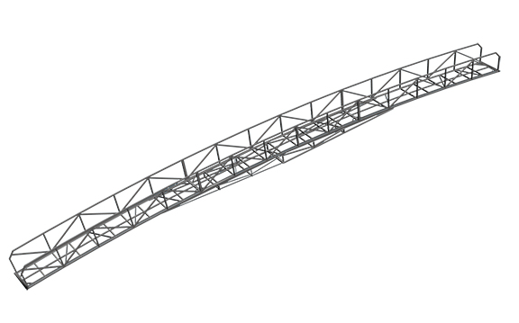
Our arched bridge truss design is an all-aluminum construction in 5’ - 80’ standard single span lengths. Reinforced ramp bracing is available dependent on application and/or design.
True “piano hinge” ramp connection uses marine grade, solid aluminum UHMW bushing-encased hinge pin through aluminum 3/8” wall pipe incorporated in a full length track system welded to mainframe channel. Ideal for upper or lower level ramp attachments. Double diagonal gussets reinforce high stress locations.
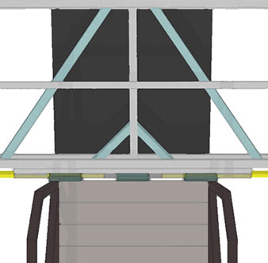
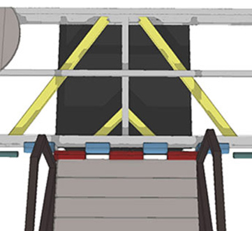
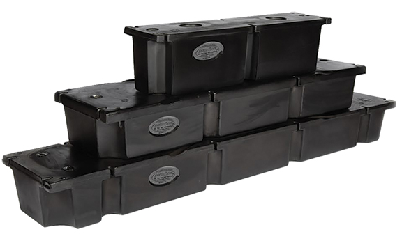
The ultimate in durable dock flotation and support
The very foundation of every dock is a quality float, and our boat dock floats set the standard for performance and durability. They keep your dock afloat. This is no place to cut corners, and we don’t.
Our EPS billets are manufactured by nationally recognized companies. These foam-filled, rotomolded polyethylene encasements meet or exceed all U.S. Army Corps of Engineers regulations and are unaffected by salt water, virtually all chemicals and are covered by our exclusive limited lifetime warranty.
Flotation billets are attached to the mainframe using 3/8” stainless steel bolts, 1” stainless steel fender washers and are secured by using nylon lock nuts. The result: floats that remain secure under severe conditions, without separation or movement.

Copyright © Flotation Systems, Inc.,
All rights reserved.


Business Hours: M-F, 8AM-5PM